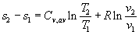
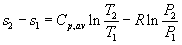
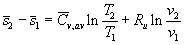
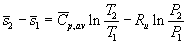
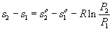
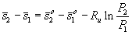
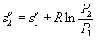

MODULE 12: CHANGES IN ENTROPY
(fragments of the CD that comes with
Cengel&Boles's book "Thermodynamics", 3-d edition, McGraw-Hill,
1998)
Class notes (end)
The entropy-change and isentropic relations for a process can be summarized as follows:
Ideal gases:
a. Constant specific heats (approximate treatment):
Any process:

[kJ/(kg K)]
and

[kJ/(kg K)]
Or, on a unit-mole basis,

[kJ/(kmolK)]
and

[kJ/(kmolK)]
Isentropic process:
(T2/T1)s=const=(v1/v2) k-1
(T2/T1)s=const=(P2/P1) (k-1)/k
(P2/P1)s=const=(v1/v2) k.
For an isentropic process this last result looks like Pvk = constant which is the polytropic process equation Pvn = constant with n = k = Cp/Cv.
b. Variable specific heats (exact treatment):
From Tds = dh - vdP, we obtain
The first term can be integrated relative to a reference state at temperature Tref.
The integrals on the right hand side of the above equation are called the standard state entropies, so. so is a function of temperature only.
Therefore, for any process:

[kJ/(kg K)]or

[kJ/(kmol K)]
The standard state entropies are found in Tables A.17 for air on a mass basis and Tables A.18 through A.25 for other gases on a mole basis. When using this variable specific heat approach to finding the entropy change for an ideal gas, remember to include the pressure term along with the standard state entropy terms--the tables don't warn you to do this.
Isentropic process: s = 0

[kJ/(kg K)]
If we are given T1, P1, and P2, we find so1 at T1, calculate so2 and then determine from the tables T2, u2, and h2.
When air undergoes an isentropic process when variable specific heat data is required, there is another approach to finding the properties at the end of the isentropic process. Consider the entropy change written as
Let T1 = Tref, P1 = Pref = 1atm, T2 = T, P2 = P, and setting the entropy change equal to zero yields
We define the relative pressure Pr as the above pressure ratio. Pr is the pressure ratio necessary to have an isentropic process between the reference temperature and the actual temperature and is a function of the actual temperature. This parameter is a function of temperature only and is found the air tables, Table A-17. The relative pressure is not available for other gases in this text.
The ratio of pressures in an isentropic process is related to the ratio of relative pressures.
There is a second approach to finding data at the end of an ideal gas isentropic process when variable specific heat data is required.
From Tds = du + Pdv, we obtain for ideal gases
Let T1 = Tref, v1 = vref = 1atm, T2 = T, v2 = v, and setting the entropy change equal to zero yields
We define the relative volume vr as the above volume ratio. vr is the volume ratio necessary to have an isentropic process between the reference temperature and the actual temperature and is a function of the actual temperature. This parameter is a function of temperature only and is found the air tables, Table A-17. The relative volume is not available for other gases in this text.